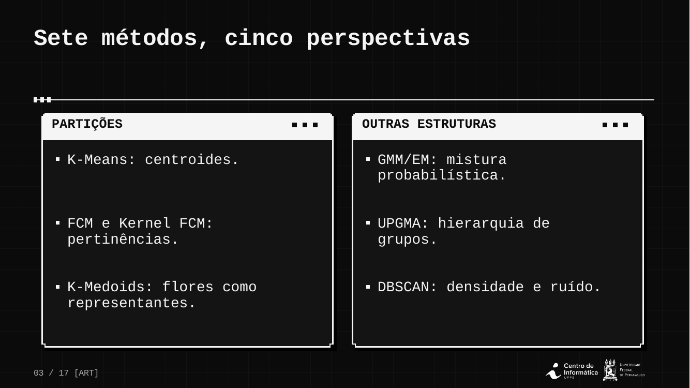
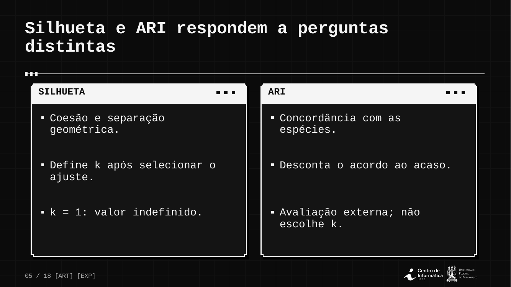
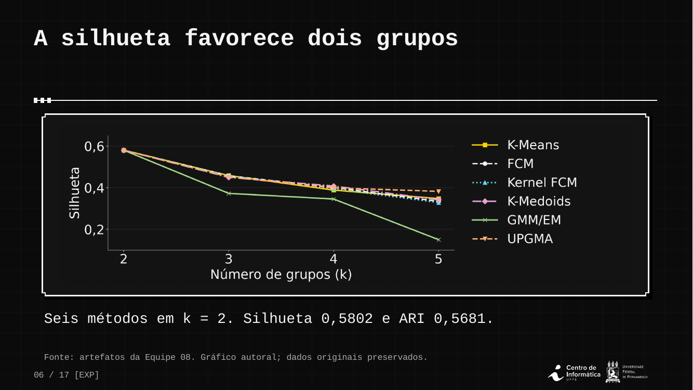
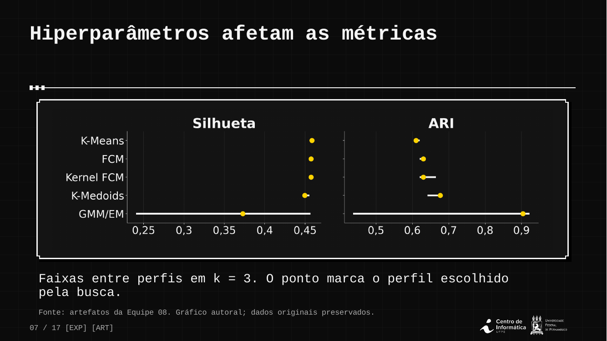
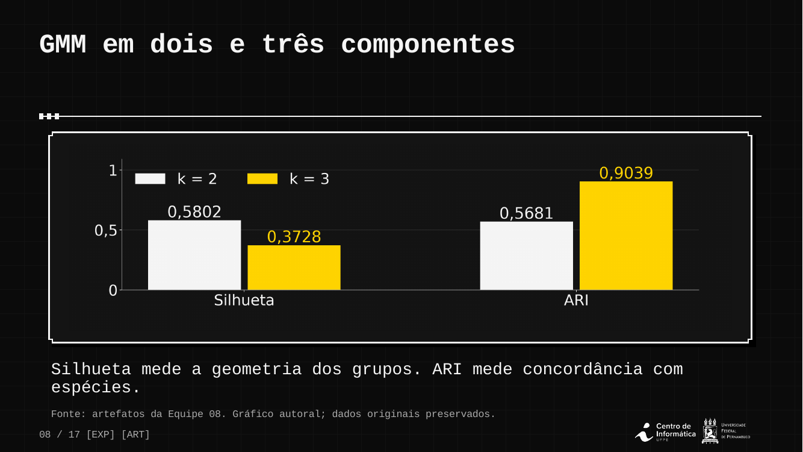
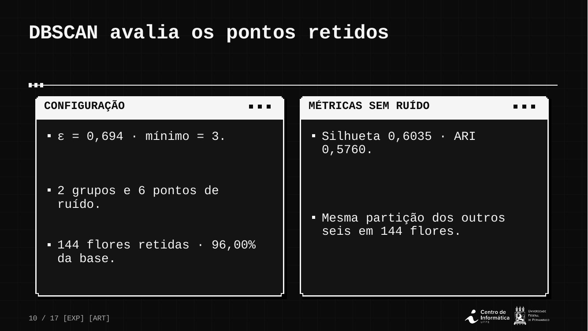
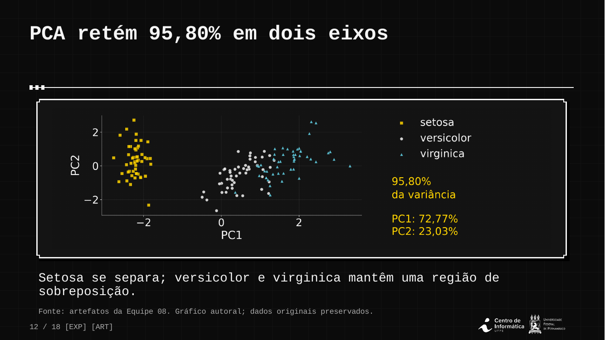
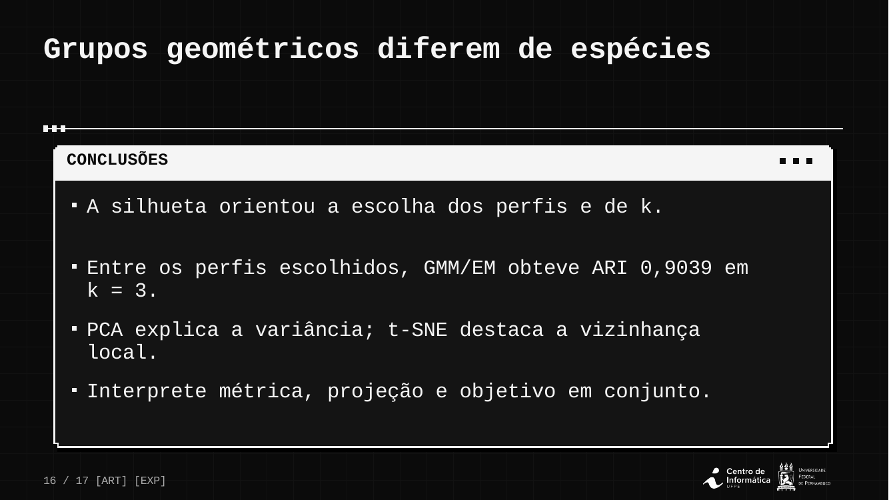

Iris: agrupamento e redução de dimensionalidade
 1. Iris: grupos e projeções2. Três espécies; quantos grupos?
1. Iris: grupos e projeções2. Três espécies; quantos grupos?
3. Sete métodos, cinco perspectivas 4. O protocolo separa ajuste e avaliação
4. O protocolo separa ajuste e avaliação
5. Silhueta e ARI respondem a perguntas distintas
6. A silhueta favorece dois grupos
7. Hiperparâmetros afetam as métricas
8. GMM em dois e três componentes 9. Uma árvore permite vários cortes
9. Uma árvore permite vários cortes
10. DBSCAN avalia os pontos retidos 11. PCA retém 95,80% em dois eixos
11. PCA retém 95,80% em dois eixos
12. Kernel PCA muda a geometria 13. t-SNE e UMAP enfatizam vizinhanças
13. t-SNE e UMAP enfatizam vizinhanças 14. t-SNE preservou mais vizinhos locais
14. t-SNE preservou mais vizinhos locais 15. O alcance das conclusões é descritivo
15. O alcance das conclusões é descritivo
16. Grupos geométricos diferem de espécies 17. Fontes e rastreabilidade
17. Fontes e rastreabilidade